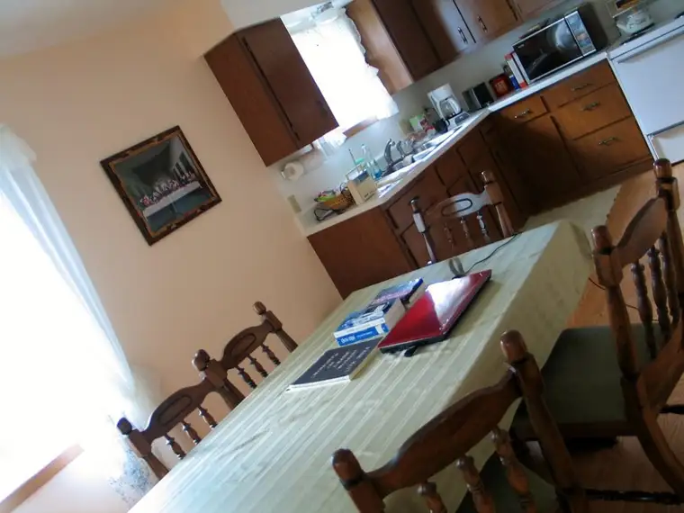
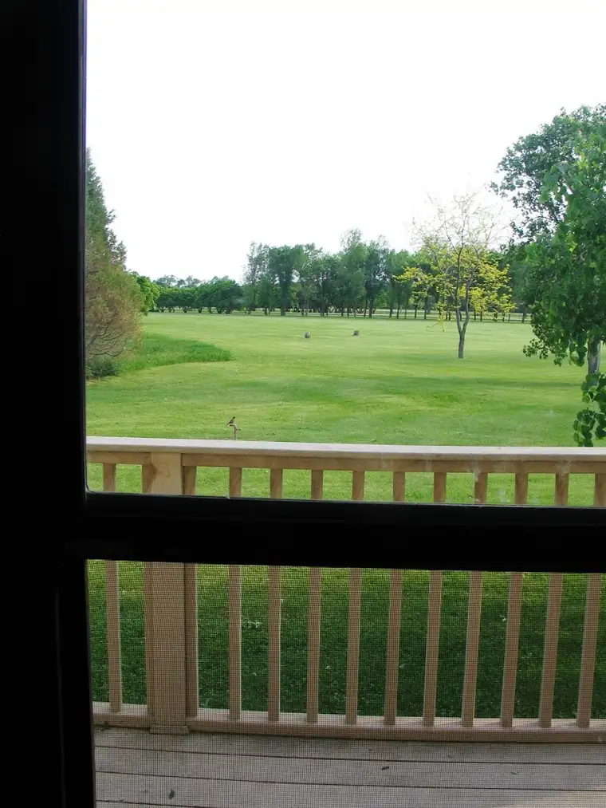
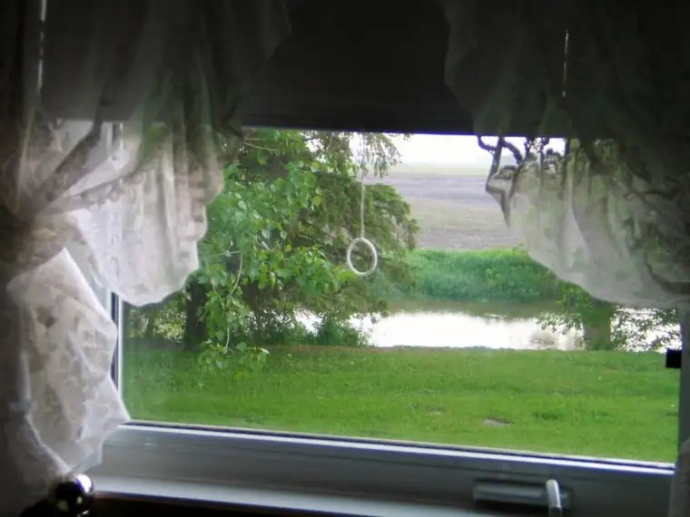

I’ve discovered a no-fail cure for writer’s block. And I know it’s effective because I’ve just swallowed a week’s worth of the remedy myself: time at a Carmelite Monastery.
{kind=link}
During my last post, I shared that I would be hiding out for a while. Here’s a peek at said hideout:
{kind=link}
While I was tempted to write a quick follow-up post from my place of refuge last Wednesday, something inside whispered, “No, just wait. Save this for the work at hand. Blogging can return in time.” It felt good to listen to that voice and not let anything interfere with my immediate goals.
Of course, it helped that I had a specific project that needed my attention — one I feel passionate about — and that I’d done quite a bit of preparation beforehand.
{kind=link}
 |
| Guest house dining room table and kitchen (one of my main working areas) |
{kind=link}
But it wasn’t enough. I needed space and time. I needed to move away from the madness of May and into a place of calm; a place where I, for the first time ever, could experience life without any kind of exterior tension.
{kind=link}
{kind=link}
The squawking of these curious Guinea fowl was the only conflict I ran up against in my time there, and even that was more amusing than annoying. Besides, Guineas are known for ridding the grounds of ticks. Noisy though they were at times, I wasn’t about to complain.
When I made a connection with the monastery in February after writing an article on a solemn profession of vows of one of the Sisters, I wondered if Carmel of Mary could be the place to bring my project to give it its due. Everything was frozen then, and I couldn’t imagine how different the place would look in a few months’ time.
{kind=link}
Carmel of Mary delivered…and then some. By midweek, I had to pinch myself that I was only halfway through my visit and had another four days to go.
 |
| Scene from the front door of the guest house |
Funny, at first I slightly resisted the Sisters’ request that I attend 7 a.m. daily Mass. Don’t get me wrong. I knew what a luxury this would be! But 7 a.m.? That’s usually the time I’m rolling out of bed to bring the kids to school — in my pajamas. I can’t help that I’m a born Night Owl.
{kind=link}
But I soon realized…getting up for Mass at 7 was no problem, especially since I had the rest of the day obligation-free, save mealtime. In fact, it was the most peaceful, useful way to start the day, and if I should need a nap later, that could easily be arranged.
 |
| View from my bedroom window — the Wild Rice River |
{kind=link}
I’ve never experienced anything quite like this in all of my years as a writer, and may never again. Though I’ve had two previously wonderful stays at a Benedictine monastery and will be forever grateful for that time as well, the difference with this is that I was completely immersed in solitude, since the nuns are cloistered. Even mealtimes took place in silence. Did this bother me? Not even close. The true writer-soul thirsts for the kind of contemplation I was afforded at Carmel. Having no other commitment but the project at hand was an unfathomably rich experience.
{kind=link}
And so I thrived there. When one more fruitful day passed, I peeked around the corner expecting a desert. But it never happened. Each day was a gift unlike any other I’ve experienced. I spent an hour out by this state of Mary one day and, while at the base of her, an entire chapter poured out.
{kind=link}
Some might wonder how I was so fortunate to have experienced such a tremendous gift. The only explanation I have is that divine providence came into play. I won’t take the time to explain all, but I know that God’s hand, and loving heart, was at work in my time at Carmel. So aware was I of this that I rarely prayed out loud. I was living a prayer each day and felt in constant touch with the eternal presence.
Affirmation came once more when the peonies by the guest house bloomed during my stay.
{kind=link}
How happy I would be if all my writer friends could have a Carmel-like visit! When one experiences something so lovely, it’s hard not to wish the same for others. For now, I offer you my words and pictures and the hope that you, too, are moving closer to your summertime oasis.
Now, if only I could take a bit of Carmel and bottle it up so that I could always have a little with me whenever I hit a bump in the road of this writer’s journey!
Q4U: Where is your summertime writing oasis? If you’re not there yet, what will you do to get there?
{kind=link}
(Read more about how I was nourished by the Carmelites on my Mama Mondays post on Peace Garden Mama.)